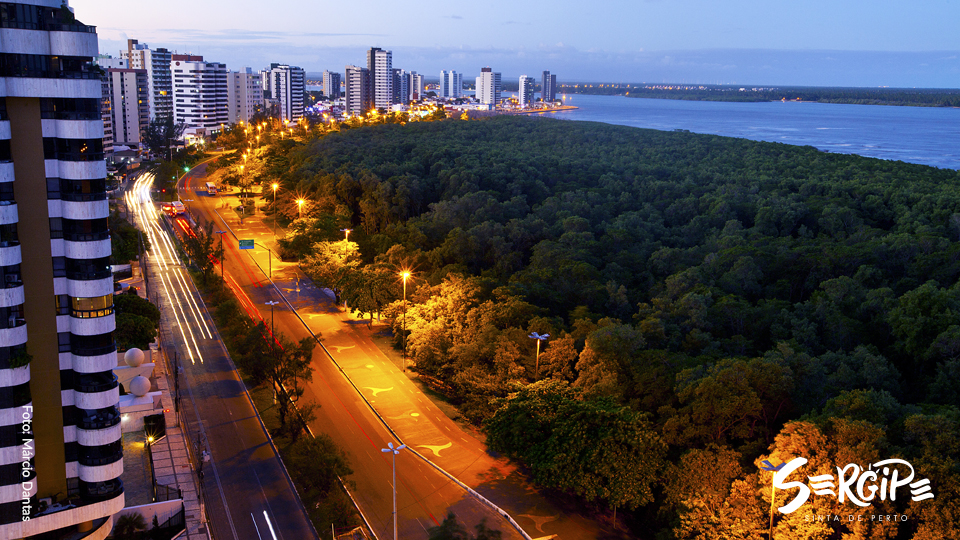

Sergipe é o menor estado do Brasil, localizado na região Nordeste, com Aracaju como sua capital. É conhecido por suas praias bonitas, como a Praia do Saco e a Praia de Atalaia, que atraem turistas. Sergipe também tem uma cultura rica, com festas tradicionais, música e culinária deliciosa. A economia do estado é baseada na agricultura, na indústria petroquímica e no turismo. Apesar de pequeno, Sergipe possui uma história interessante e uma beleza natural encantadora!

Voltar